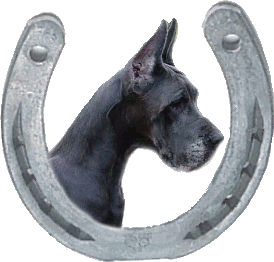
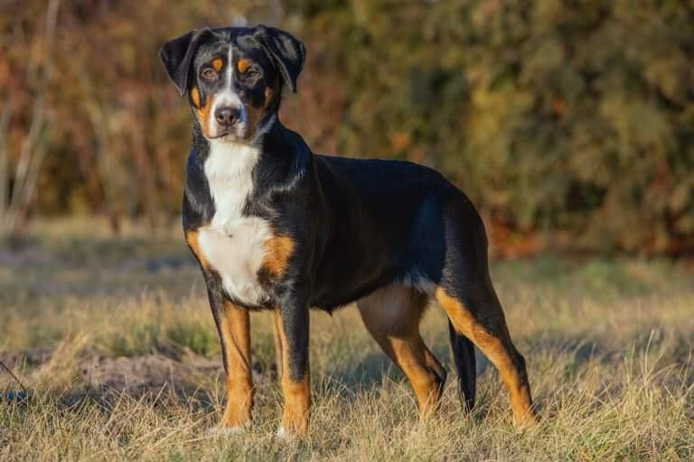
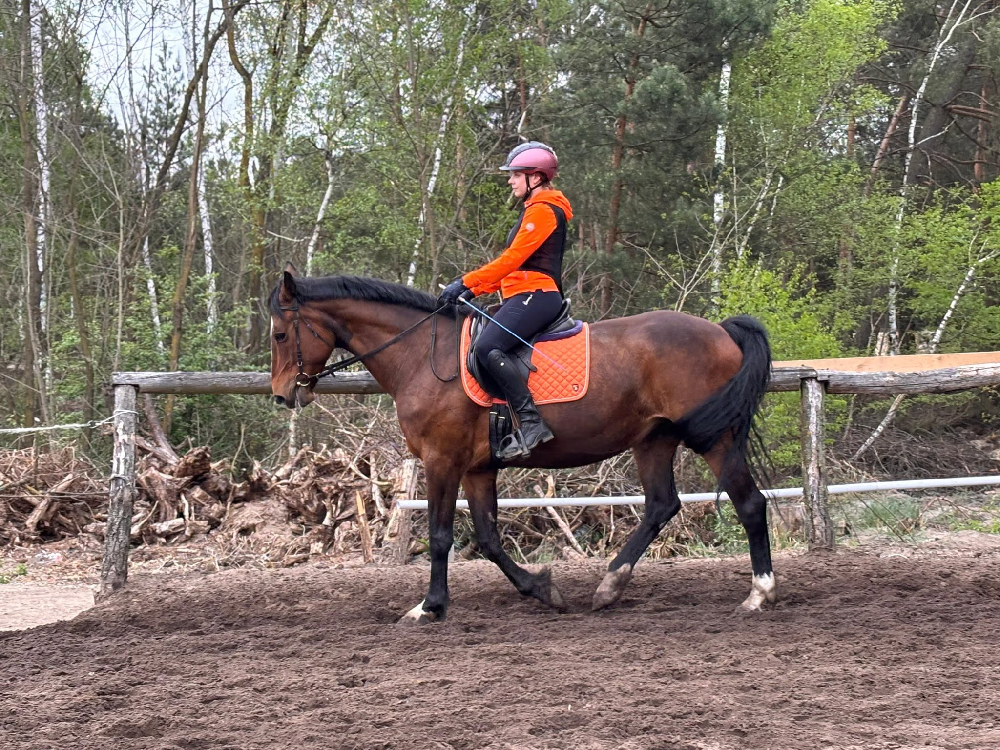

Hodowla psów · Stajnia · Zakrzew k. Warki

Duże szwajcarskie psy pasterskie i Jack Russell teriery — rodowody i szczenięta z domowej hodowli.
Wejdź do hodowli
Witamy w stajni! Nauka jazdy konnej, przejażdżki po lesie, oprowadzanki dla najmłodszych i hipoterapia.
Wejdź do stajni